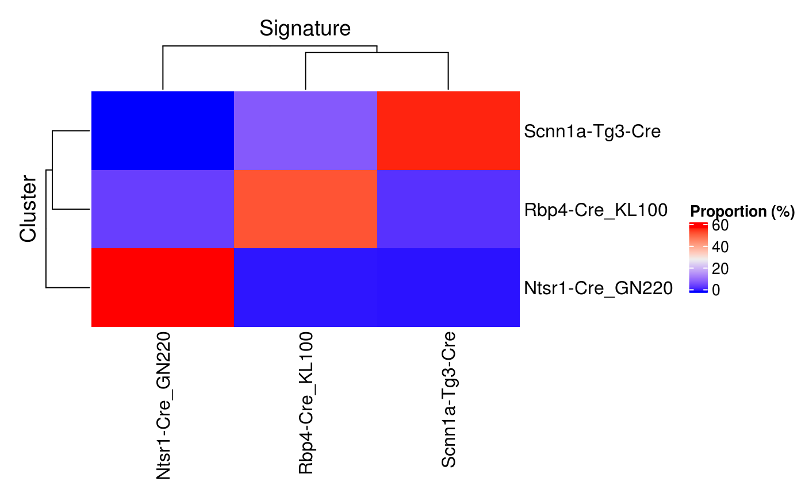

vignettes/hancock.Rmd
hancock.RmdAbstract
Example usage of the hancock package demonstrated using example data sets.Compiled date: 2019-02-15
Last edited: 2018-03-08
License: MIT + file LICENSE
The goal of the hancock package is to provide a collection of methods for learning and applying gene signatures associated with cellular phenotypes and identities. Particular focus is given to single-cell data stored in objects derived from the SummarizedExperiment class.
To run an analysis, the first step is to start R and load the hancock package:
As an initial example, we demonstrate an analysis to find genes markers of three populations of neurons labelled by the fluorescent protein tdTomato (tdT) after Cre-mediated recombination.
For this example, we use a subset of single-cell RNA-seq dataset from the Allen Brain Atlas (Tasic et al. 2016). This dataset is available in the scRNAseq experiment data package:
library(scRNAseq)
data(allen)
allen
#> class: SummarizedExperiment
#> dim: 20908 379
#> metadata(2): SuppInfo which_qc
#> assays(4): tophat_counts cufflinks_fpkm rsem_counts rsem_tpm
#> rownames(20908): 0610007P14Rik 0610009B22Rik ... Zzef1 Zzz3
#> rowData names(0):
#> colnames(379): SRR2140028 SRR2140022 ... SRR2139341 SRR2139336
#> colData names(22): NREADS NALIGNED ... Animal.ID
#> passes_qc_checks_sThe individual Cre line is indicated for each cell in the "driver_1_s" metadata.
For instance, the learning method "PositiveProportionDifference" requires prior clustering information to be stored as a factor in a column of the colData slot. The method can then be applied to identify markers for each cluster, using a variety of filters on individual markers (e.g., minimal difference in detection rate between the target cluster and any other cluster) and on the combined set of markers (e.g., minimal proportion of cells in the target cluster where all markers are detected simultaneously). Here, we use the Cre line information to find genes markers of the three populations of neurons.
allen$driver_1_s <- as.factor(allen$driver_1_s)
baseset <- learnSignatures(
se = allen, assay.type = "tophat_counts",
method = "PositiveProportionDifference", cluster.col = "driver_1_s",
min.prop = 0.5, min.diff = 0.3, diff.method = "min")
baseset
#> BaseSets with 31 relations between 31 elements and 3 sets
#> element set relationData
#> <IdVector> <IdVector> <DataFrame>
#> 1 Foxp2 Ntsr1-Cre_GN220 1:0.773684210526316
#> 2 Rprm Ntsr1-Cre_GN220 0.974683544303797:0.627315123251166
#> 3 Gadd45a Ntsr1-Cre_GN220 0.974683544303797:0.516788807461692
#> 4 Ddah1 Ntsr1-Cre_GN220 0.974683544303797:0.511047180667434
#> 5 Tle4 Ntsr1-Cre_GN220 1:0.510526315789474
#> ... ... ...
#> 1 Pvrl1 Scnn1a-Tg3-Cre 0.936363636363636:0.34688995215311
#> 2 S100a10 Scnn1a-Tg3-Cre 0.936363636363636:0.336363636363636
#> 3 Coch Scnn1a-Tg3-Cre 0.954545454545455:0.317703349282297
#> 4 Dkkl1 Scnn1a-Tg3-Cre 0.872727272727273:0.309569377990431
#> 5 Rims3 Scnn1a-Tg3-Cre 0.981818181818182:0.302870813397129
#> elementData setData
#> <DataFrame> <DataFrame>
#> 1 0.361477572559367 0.556962025316456
#> 2 0.437994722955145 0.556962025316456
#> 3 0.482849604221636 0.556962025316456
#> 4 0.562005277044855 0.556962025316456
#> 5 0.551451187335092 0.556962025316456
#> ... ...
#> 1 0.596306068601583 0.545454545454545
#> 2 0.638522427440633 0.545454545454545
#> 3 0.635883905013193 0.545454545454545
#> 4 0.577836411609499 0.545454545454545
#> 5 0.720316622691293 0.545454545454545In hancock, learning methods return BaseSets objects, defined in the unisets package. This container stores relations between elements (e.g., genes) and sets (e.g., signatures), along with optional metadata associated with each relation. In the next section, we explore the various pieces of information populated by method = "PositiveProportionDifference").
Notably, the metadata associated with each relation between a marker ("element") and the signature ("set") can be flattened in a data.frame format. Specifically, the "PositiveProportionDifference" describes two pieces of information:
"ProportionPositive", the proportion of cells with detectable expression of the marker in the associated cluster"minDifferenceProportion", the minimal difference betwween the detection rate in the associated cluster compared with that of each other clusterhead(as.data.frame(baseset))
#> element set ProportionPositive minDifferenceProportion
#> 1 Foxp2 Ntsr1-Cre_GN220 1.0000000 0.7736842
#> 2 Rprm Ntsr1-Cre_GN220 0.9746835 0.6273151
#> 3 Gadd45a Ntsr1-Cre_GN220 0.9746835 0.5167888
#> 4 Ddah1 Ntsr1-Cre_GN220 0.9746835 0.5110472
#> 5 Tle4 Ntsr1-Cre_GN220 1.0000000 0.5105263
#> 6 Dpy19l3 Ntsr1-Cre_GN220 0.9113924 0.4750288In addition, metadata associated with each unique marker–irrespective of its specific relationships with individual signature–are stored in the metadata columns of the elementData slot. Specifically, the "PositiveProportionDifference" describes "ProportionPositive", the proportion of cells with detectable expression of the markers across the entire data set.
mcols(elementData(baseset))
#> DataFrame with 31 rows and 1 column
#> ProportionPositive
#> <numeric>
#> Foxp2 0.361477572559367
#> Rprm 0.437994722955145
#> Gadd45a 0.482849604221636
#> Ddah1 0.562005277044855
#> Tle4 0.551451187335092
#> ... ...
#> Pvrl1 0.596306068601583
#> S100a10 0.638522427440633
#> Coch 0.635883905013193
#> Dkkl1 0.577836411609499
#> Rims3 0.720316622691293Finally, metadata associated with each unique signature–irrespective of its specific relationships with individual markers–are stored in the metadata columns of the setData slot. Specifically, the "PositiveProportionDifference" describes "ProportionPositive", the proportion of cells with detectable expression of all markers associated with each signature across the entire data set.
Markers learned previously may then be applied on the training data set itself, to annotate each cluster with its corresponding signature.
allen.hancock <- predict(
baseset, allen, assay.type = "tophat_counts",
method = "ProportionPositive", cluster.col="driver_1_s")
allen.hancock
#> class: SummarizedExperiment
#> dim: 20908 379
#> metadata(3): SuppInfo which_qc hancock
#> assays(4): tophat_counts cufflinks_fpkm rsem_counts rsem_tpm
#> rownames(20908): 0610007P14Rik 0610009B22Rik ... Zzef1 Zzz3
#> rowData names(0):
#> colnames(379): SRR2140028 SRR2140022 ... SRR2139341 SRR2139336
#> colData names(23): NREADS NALIGNED ... passes_qc_checks_s hancockIn hancock, the predict function populates:
"hancock" column of colData(allen.hancock)
"hancock" item of metadata(allen.hancock)
In the next section, we explore the various pieces of information populated by method = "ProportionPositive".
The key output of every prediction method is the cell identity predicted for each cell in the object. All prediction methods store this information in colData(sce)[["hancock"]][["prediction"]], or sce$hancock$prediction, in short.
summary(as.data.frame(colData(allen.hancock)[["hancock"]]))
#> prediction
#> Ntsr1-Cre_GN220: 79
#> Rbp4-Cre_KL100 :190
#> Scnn1a-Tg3-Cre :110The metadata slot is used to store some required information:
"GeneSets", the signatures used in the prediction process"method", the unique identifier of the prediction method"packageVersion", the version of the hancock package that performed the predictionOptional method-specific information may be added by each prediction method. For method="ProportionPositive", those are:
"ProportionPositiveByCluster", the proportion of cells in each cluster that express all markers in each signature"TopSignatureByCluster", the most frequently detected signature in each clustermetadata(allen.hancock)[["hancock"]]
#> $GeneSets
#> BaseSets with 31 relations between 31 elements and 3 sets
#> element set relationData
#> <IdVector> <IdVector> <DataFrame>
#> 1 Foxp2 Ntsr1-Cre_GN220 1:0.773684210526316
#> 2 Rprm Ntsr1-Cre_GN220 0.974683544303797:0.627315123251166
#> 3 Gadd45a Ntsr1-Cre_GN220 0.974683544303797:0.516788807461692
#> 4 Ddah1 Ntsr1-Cre_GN220 0.974683544303797:0.511047180667434
#> 5 Tle4 Ntsr1-Cre_GN220 1:0.510526315789474
#> ... ... ...
#> 1 Pvrl1 Scnn1a-Tg3-Cre 0.936363636363636:0.34688995215311
#> 2 S100a10 Scnn1a-Tg3-Cre 0.936363636363636:0.336363636363636
#> 3 Coch Scnn1a-Tg3-Cre 0.954545454545455:0.317703349282297
#> 4 Dkkl1 Scnn1a-Tg3-Cre 0.872727272727273:0.309569377990431
#> 5 Rims3 Scnn1a-Tg3-Cre 0.981818181818182:0.302870813397129
#> elementData setData
#> <DataFrame> <DataFrame>
#> 1 0.361477572559367 0.556962025316456
#> 2 0.437994722955145 0.556962025316456
#> 3 0.482849604221636 0.556962025316456
#> 4 0.562005277044855 0.556962025316456
#> 5 0.551451187335092 0.556962025316456
#> ... ...
#> 1 0.596306068601583 0.545454545454545
#> 2 0.638522427440633 0.545454545454545
#> 3 0.635883905013193 0.545454545454545
#> 4 0.577836411609499 0.545454545454545
#> 5 0.720316622691293 0.545454545454545
#>
#> $method
#> [1] "ProportionPositive"
#>
#> $packageVersion
#> [1] '0.99.0'
#>
#> $ProportionPositiveByCluster
#> signature
#> cluster Ntsr1-Cre_GN220 Rbp4-Cre_KL100 Scnn1a-Tg3-Cre
#> Ntsr1-Cre_GN220 0.556962025 0.05063291 0.00000000
#> Rbp4-Cre_KL100 0.010526316 0.50526316 0.08421053
#> Scnn1a-Tg3-Cre 0.009090909 0.03636364 0.54545455
#>
#> $TopSignatureByCluster
#> Ntsr1-Cre_GN220 Rbp4-Cre_KL100 Scnn1a-Tg3-Cre
#> Ntsr1-Cre_GN220 Rbp4-Cre_KL100 Scnn1a-Tg3-Cre
#> Levels: Ntsr1-Cre_GN220 Rbp4-Cre_KL100 Scnn1a-Tg3-CreIn particular, "ProportionPositiveByCluster" may be visualized as a heat map using the plotProportionPositive method. This view is useful to examine the specificity of each signature for each cluster.

In addition, the hancock package includes a lightweight shiny app that offers users the possibility to interactively rename signatures while inspecting their features in a SummarizedExperiment object (e.g., count of cells associated with each signature, layout in reduced dimension).
Specifically, the app requires a set of signatures and a SummarizedExperiment object that was previously annotated with those signatures using the predict function. When closed, the app returns the updated set of signatures.
allen.hancock <- predict(
baseset, allen, assay.type = "tophat_counts", method = "ProportionPositive",
cluster.col="driver_1_s")
if (interactive()) {
library(shiny)
baseset <- runApp(shinyLabels(baseset, allen.hancock))
}Notably, this shiny app automatically detects the presence of optional dimensionality reduction results in SingleCellExperiment objects, allowing inspection and annotation of the gene signatures using that information.
library(SingleCellExperiment)
library(scater)
allen.hancock <- as(allen.hancock, "SingleCellExperiment")
allen.hancock <- normalize(allen.hancock, exprs_values="tophat_counts")
allen.hancock <- runPCA(allen.hancock)
allen.hancock <- runTSNE(allen.hancock)
if (interactive()) {
library(shiny)
baseset <- runApp(shinyLabels(baseset, allen.hancock))
}As described in the accompanying concepts vignette, absolute markers (also known as “pan markers”) may be defined as genes detected in each cluster, irrespective of their expression in the other clusters.
For instance, the "PositiveProportionDifference" learning method can be used to identify such markers, by setting min.diff=0 to annul any comparison between the detection frequency in the target cluster and all other clusters.
As the numbers of genes detected in each cluster may be rather large, it is generally a good idea to restrict markers to be detected in a very high fraction of the corresponding cluster, for instance min.prop = 0.9. In addition, the threshold argument may be used to define a minimal threshold of expression level to consider a marker as “detected” in each cell, and the assay.type argument declares the assay to use (e.g., “counts”, “logcouts”, “TPM”).
This ensures that for each cluster, the combined set of markers is simultaneously detected above 1 transcript per million (TPM) in at least 90% of cells in that cluster.
baseset <- learnSignatures(
se = allen, assay.type = "rsem_tpm",
method = "PositiveProportionDifference", cluster.col = "driver_1_s",
min.diff = 0, min.prop = 0.9, threshold = 1)
table(ids(sets(baseset)))
#>
#> Ntsr1-Cre_GN220 Rbp4-Cre_KL100 Scnn1a-Tg3-Cre
#> 551 628 507
head(as.data.frame(baseset))
#> element set ProportionPositive minDifferenceProportion
#> 1 Foxp2 Ntsr1-Cre_GN220 1.0000000 0.91578947
#> 2 Nfia Ntsr1-Cre_GN220 1.0000000 0.47894737
#> 3 Sparcl1 Ntsr1-Cre_GN220 1.0000000 0.13684211
#> 4 Med10 Ntsr1-Cre_GN220 1.0000000 0.12631579
#> 5 Cplx2 Ntsr1-Cre_GN220 1.0000000 0.10000000
#> 6 Efhd2 Ntsr1-Cre_GN220 0.9873418 0.09260493As described in the accompanying concepts vignette, relative markers (also known as “key markers”) may be defined by differential analysis against other cells in the same sample.
For instance, the "PositiveProportionDifference" learning method can be used to identify such markers, by setting min.diff to a value greater than 0, in order to subset candidate markers to those detected at a rate at least 50% higher than the detection rate observed in any other cluster.
baseset <- learnSignatures(
se = allen, assay.type = "tophat_counts",
method = "PositiveProportionDifference", cluster.col = "driver_1_s",
min.diff = 0.5, diff.method = "min")
table(ids(sets(baseset)))
#>
#> Ntsr1-Cre_GN220 Rbp4-Cre_KL100 Scnn1a-Tg3-Cre
#> 14 2 4Among the learning outputs stored in the BaseSets metadata information, the relation metadata column "minDifferenceProportion" reflects the min.diff=0.5 threshold applied when learning the signatures.
summary(mcols(relations(baseset))[["minDifferenceProportion"]])
#> Min. 1st Qu. Median Mean 3rd Qu. Max.
#> 0.5085 0.5341 0.5861 0.5949 0.6298 0.7737In addition, information about individual markers may be stored as element metadata accessible using the elementData and mcols methods as shown below. For instance, the proportion of cells positive for each marker across the entire data set.
mcols(elementData(baseset))
#> DataFrame with 20 rows and 1 column
#> ProportionPositive
#> <numeric>
#> Foxp2 0.361477572559367
#> Syt6 0.168865435356201
#> Thsd7b 0.266490765171504
#> Ifitm2 0.253298153034301
#> Rprm 0.437994722955145
#> ... ...
#> 6330403A02Rik 0.390501319261214
#> Scnn1a 0.263852242744063
#> Whrn 0.308707124010554
#> Igfn1 0.403693931398417
#> Grik1 0.33245382585752Similarly, information about individual sets may be stored as set metadata accessible using the setData and mcols methods as shown below. For instance, the proportion of cells simultaneously positive for all markers in the cluster where this signature was defined.
mcols(setData(baseset))
#> DataFrame with 3 rows and 1 column
#> ProportionPositive
#> <numeric>
#> Ntsr1-Cre_GN220 0.113924050632911
#> Rbp4-Cre_KL100 0.642105263157895
#> Scnn1a-Tg3-Cre 0.418181818181818For instance, future methods to identify absolute markers could include differential expression between the target cluster and all other clusters to identify candidate markers significantly differentially expressed between clusters.
Bug reports can be posted as issues in the hancock GitHub repository. The GitHub repository is the primary source for development versions of the package, where new functionality is added over time. The authors appreciate well-considered suggestions for improvements or new features, or even better, pull requests.
If you use hancock for your analysis, please cite it as shown below:
citation("hancock")
#>
#> To cite package 'hancock' in publications use:
#>
#> Kevin Rue-Albrecht, Robert Amezquita and Aaron Lun (2018).
#> hancock: Learn and Apply Cell Type Signatures.
#> https://github.com/kevinrue/hancock,
#> http://kevinrue.github.io/hancock.
#>
#> A BibTeX entry for LaTeX users is
#>
#> @Manual{,
#> title = {hancock: Learn and Apply Cell Type Signatures},
#> author = {Kevin Rue-Albrecht and Robert Amezquita and Aaron Lun},
#> year = {2018},
#> note = {https://github.com/kevinrue/hancock,
#> http://kevinrue.github.io/hancock},
#> }sessionInfo()
#> R Under development (unstable) (2019-02-15 r76105)
#> Platform: x86_64-pc-linux-gnu (64-bit)
#> Running under: Ubuntu 14.04.5 LTS
#>
#> Matrix products: default
#> BLAS: /home/travis/R-bin/lib/R/lib/libRblas.so
#> LAPACK: /home/travis/R-bin/lib/R/lib/libRlapack.so
#>
#> locale:
#> [1] LC_CTYPE=en_US.UTF-8 LC_NUMERIC=C
#> [3] LC_TIME=en_US.UTF-8 LC_COLLATE=en_US.UTF-8
#> [5] LC_MONETARY=en_US.UTF-8 LC_MESSAGES=en_US.UTF-8
#> [7] LC_PAPER=en_US.UTF-8 LC_NAME=C
#> [9] LC_ADDRESS=C LC_TELEPHONE=C
#> [11] LC_MEASUREMENT=en_US.UTF-8 LC_IDENTIFICATION=C
#>
#> attached base packages:
#> [1] parallel stats4 stats graphics grDevices utils datasets
#> [8] methods base
#>
#> other attached packages:
#> [1] scater_1.11.10 ggplot2_3.1.0
#> [3] SingleCellExperiment_1.5.2 scRNAseq_1.9.0
#> [5] hancock_0.99.0 unisets_0.99.0
#> [7] SummarizedExperiment_1.13.0 DelayedArray_0.9.8
#> [9] BiocParallel_1.17.13 matrixStats_0.54.0
#> [11] Biobase_2.43.1 GenomicRanges_1.35.1
#> [13] GenomeInfoDb_1.19.2 IRanges_2.17.4
#> [15] S4Vectors_0.21.10 BiocGenerics_0.29.1
#> [17] BiocStyle_2.11.0
#>
#> loaded via a namespace (and not attached):
#> [1] bitops_1.0-6 fs_1.2.6
#> [3] bit64_0.9-7 RColorBrewer_1.1-2
#> [5] rprojroot_1.3-2 tools_3.6.0
#> [7] backports_1.1.2 R6_2.4.0
#> [9] vipor_0.4.5 DBI_1.0.0
#> [11] lazyeval_0.2.1 colorspace_1.4-0
#> [13] GetoptLong_0.1.7 withr_2.1.2
#> [15] gridExtra_2.3 tidyselect_0.2.5
#> [17] bit_1.1-14 compiler_3.6.0
#> [19] graph_1.61.0 BiocNeighbors_1.1.11
#> [21] xml2_1.2.0 desc_1.2.0
#> [23] rtracklayer_1.43.1 bookdown_0.9
#> [25] scales_1.0.0 pkgdown_1.3.0
#> [27] commonmark_1.7 stringr_1.4.0
#> [29] digest_0.6.18 Rsamtools_1.99.1
#> [31] rmarkdown_1.11 XVector_0.23.0
#> [33] pkgconfig_2.0.2 htmltools_0.3.6
#> [35] rlang_0.3.1 GlobalOptions_0.1.0
#> [37] RSQLite_2.1.1 DelayedMatrixStats_1.5.2
#> [39] shiny_1.2.0 shape_1.4.4
#> [41] jsonlite_1.6 dplyr_0.8.0
#> [43] RCurl_1.95-4.11 magrittr_1.5
#> [45] GenomeInfoDbData_1.2.0 Matrix_1.2-15
#> [47] ggbeeswarm_0.6.0 Rcpp_1.0.0
#> [49] munsell_0.5.0 GeneSet_0.0.1
#> [51] viridis_0.5.1 rintrojs_0.2.0
#> [53] stringi_1.3.1 yaml_2.2.0
#> [55] MASS_7.3-51.1 zlibbioc_1.29.0
#> [57] Rtsne_0.15 plyr_1.8.4
#> [59] grid_3.6.0 blob_1.1.1
#> [61] promises_1.0.1 shinydashboard_0.7.1
#> [63] crayon_1.3.4 lattice_0.20-38
#> [65] Biostrings_2.51.2 cowplot_0.9.4
#> [67] annotate_1.61.0 circlize_0.4.5
#> [69] knitr_1.21 ComplexHeatmap_1.99.5
#> [71] pillar_1.3.1 rjson_0.2.20
#> [73] reshape2_1.4.3 XML_3.98-1.17
#> [75] glue_1.3.0 evaluate_0.13
#> [77] BiocManager_1.30.4 httpuv_1.4.5.1
#> [79] gtable_0.2.0 purrr_0.3.0
#> [81] assertthat_0.2.0 xfun_0.4
#> [83] mime_0.6 xtable_1.8-3
#> [85] later_0.8.0 roxygen2_6.1.1
#> [87] viridisLite_0.3.0 tibble_2.0.1
#> [89] beeswarm_0.2.3 GenomicAlignments_1.19.1
#> [91] AnnotationDbi_1.45.0 memoise_1.1.0
#> [93] GSEABase_1.45.0
# devtools::session_info()Tasic, B., V. Menon, T. N. Nguyen, T. K. Kim, T. Jarsky, Z. Yao, B. Levi, et al. 2016. “Adult Mouse Cortical Cell Taxonomy Revealed by Single Cell Transcriptomics.” Journal Article. Nat Neurosci 19 (2): 335–46. https://doi.org/10.1038/nn.4216.